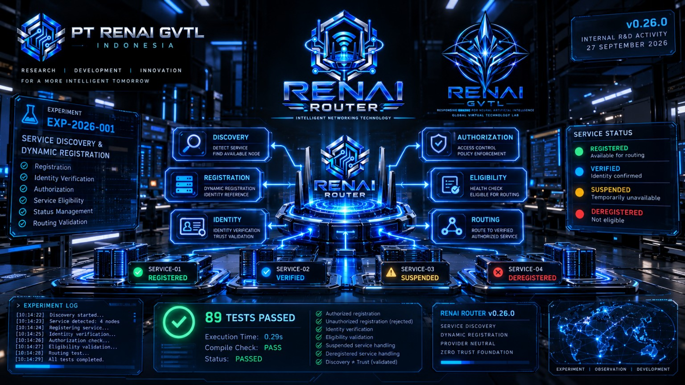

Catatan pengembangan RENAI Router menuju v0.26.0 dengan fokus pada Section 13.10 — Service Discovery & Dynamic Infrastructure Registration.

Pada 27 September 2026 , PT RENAI GVTL Indonesia melanjutkan pengembangan RENAI Router dari baseline v0.25.0 menuju v0.26.0 .
Pengembangan memasuki Section 13.10 — Service Discovery & Dynamic Infrastructure Registration dengan status: APPROVED / LOCKED & IMPLEMENTED .
Kegiatan:
Pengembangan RENAI Router
Tanggal:
27 September 2026
Baseline:
v0.25.0 → v0.26.0
Section:
13.10 — Service Discovery & Dynamic Infrastructure Registration
Status:
🟢 APPROVED / LOCKED & IMPLEMENTED
Pengembangan Section 13.10 menggunakan prinsip:
Mandatory Capability + Optional Deployment
RENAI Router dirancang memiliki kemampuan untuk mengenali dan mendaftarkan server, GPU node, region, provider, storage, queue, dan service lain secara terkontrol.
Sementara itu, deployment awal tetap dapat menggunakan mekanisme registry sederhana tanpa mengunci implementasi pada teknologi tertentu.
Setiap service atau node harus memiliki identity reference yang dapat diverifikasi.
Proses registration juga membutuhkan authorization sebelum sebuah service atau node dapat masuk ke dalam infrastruktur yang dikenali oleh Router.
Status service dalam rancangan Section 13.10 mencakup:
Service yang berada dalam status suspended atau deregistered tidak boleh menjadi target routing.
Salah satu keputusan penting dalam Section 13.10 adalah memisahkan proses discovery dari trust .
Kemampuan Router untuk menemukan atau mengenali sebuah service tidak secara otomatis menjadikan service tersebut sebagai entitas yang dipercaya.
Eligibility tetap membutuhkan:
Implementasi Section 13.10 tidak mengunci RENAI Router pada teknologi atau platform tertentu.
Arsitektur tidak secara khusus mengharuskan penggunaan:
Pendekatan ini mempertahankan fleksibilitas arsitektur agar capability discovery dan registration dapat diterapkan pada berbagai bentuk infrastruktur.
Baseline pengembangan setelah implementasi Section 13.10:
89 passed
PASS
RENAI Router v0.26.0
Service Discovery & Dynamic Registration: IMPLEMENTED
Fondasi Zero Trust tetap menjadi kontrol lintas infrastruktur.
Dengan selesainya Section 13.10, status bagian-bagian Section 13 yang telah terdokumentasi adalah:
Section 13.10 — Service Discovery & Dynamic Infrastructure Registration telah dinyatakan:
APPROVED / LOCKED & IMPLEMENTED
REN AI Router v0.26.0 kemudian ditetapkan sebagai baseline pengembangan berikutnya .
Date:
27 September 2026
Baseline:
v0.25.0 → v0.26.0
Section:
13.10 — Service Discovery & Dynamic Infrastructure Registration
Status:
🟢 APPROVED / LOCKED & IMPLEMENTED
© PT RENAI GVTL Indonesia — Research & Development (R&D)